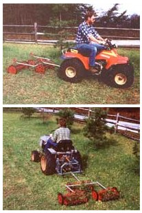
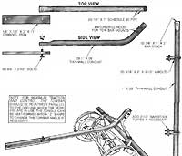

A "reel" simple way to speed up lawn maintenance:
Enjoying a plush green lawn is a heck of a lot easier than maintaining one, especially if your domain is measured in acres rather than square feet. Of course, if you've got a tractor and a mower deck, you're one step ahead of the game. But if you don't, and if you're scratching for an economical means of keeping the greens trimmed this coming season, our homebuilt gang mower might be just what you're looking for.
Now, there are probably several reasons why this mowing attachment shouldn't work, but the design is so blamed simple that there's hardly any room for flaws. When planning this project, we immediately dismissed powered rotary-mower decks because of their cost and maintenance requirements, and because a four-wheeled carriage wouldn't track correctly through turns. Rather, we chose to use old push-type reel mowers: They're still not too difficult to come by (and at junk prices), they demand only an occasional sharpening, and they're easy to maneuver.
At first glance, it would appear that, without the pressure of someone pushing down on the handle, the wheels would merely skid across the turf rather than turn and drive the blade. By the same token, it'd seem that the handleless carriages would want to seek their own direction while being towed. Both these worries were eliminated by designing the tow bars as extensions of the handles: Instead of just pulling the mowers forward, the angled shafts tend to draw them downward as well. And since the bars are fastened between the original handle mounts, each carriage moves only in the direction of the bar pulling it.
If you want to try your hand at working up your own gang mower implement, look first at the vehicle you'll be using to pull-it. Our initial tests were done with the homebuilt minitractor featured in MOTHER NOS. 76-78, using a simple drawbar fastened to its three-point hitch. Soon thereafter, we rigged up a sturdy belly hitch for a staffer's all-terrain vehicle to see how well it could handle yardwork. Both machines had the power at fast-walking speeds to operate the threemower gang . . . the difference being that the tractor was working in high gear, while the ATV did the pulling in its lower ranges. Either way, the towing vehicle must be able to move at a reasonable pace to maintain the inertia of the spinning blades.
Once you've decided you have an appropriate means of propulsion, you can launch a search for your mowers. We paid a total of $19 for our three reels, one of which was a steel-wheeled, seven-blade model which represents the zenith of push-mower technology. All had separate handle mounts from which the handle shaft could- be removed; without that feature, the handle will have to be cut just above the point where it spreads.
In addition to the mowers, you'll need three 26" pieces of 1" electrical metallic tubing or other thin-wall pipe, a 33" length of the same material, a hunk of 1/8" X 1/2" X 2" X 11" channel iron, two 5/16" X 2" X 3-1/2" Ubolts, and at least five scraps of bar stock measuring 3/8" X 1" X 3" or so. You'll also need a half-dozen 3/8" X 2-1/2" bolts and some short sections of 1 /4" Schedule 40 pipe, as well as a drill with metal-cutting bits, and some means of bending the thin-wall conduit without kinking it. (Conduit benders can be purchased for about $16 . . . or you can see if a local electrician will loan one for a few minutes.)
It's best to fabricate the lead mower framework first. This involves nothing more than bending one of the 26" lengths of tubing at a 45° angle to form a tow bar that pulls the mower from a point just below the handle mounts. To keep those mounts from crush ing the tube, slide the short sections of 1/4" pipe crosswise into the conduit after you match-drill the handle holes, then replace the bolts. The front of the bar is reinforced with a drilled bar stock insert . . . and the channel iron tongue is then fastened to the beefed-up conduit with a 3/8" bolt.
To make the crossbar that pulls the two trailing mowers, simply tap a bar stock section into each end of the 33" tube, then flatten the ends in a vise and drill a 7/16" hole through each "ear." Use the U-bolts to secure the bar to the lower sections of the handle mounts, making sure that the bolt plates are substantial enough to hold without bending. (If they're not, replace them with scraps of the 3/8" bar stock.)
Finally, rig up the remaining two tow bars as you did the first one. The attachment at the handle mounts is the same . . . but instead of adding a channel iron tongue, just drill a 7116" hole through each remaining piece of bar stock, slide them into the ends of the tubes as before, and use these inserts as tongues. Then connect the trailing mowers to the crossbar with 3/8" bolts, and you're ready to roll.
Just as with any mower, the sharper the blades, the better the cut. Our three 16" reels clipped a 48"-wide swath without missing a spot, even at the greater speeds necessitated by the ATV. If you do choose to use an all-terrain vehicle to pull the mowers and you don't have a factory- or dealer-supplied hitch, be sure to attach your drawbar to a substantial part of the vehicle's main frame and not just to a fender support or other lightweight member.
|
 |
 |
|